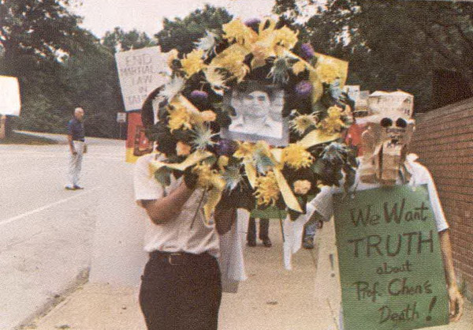
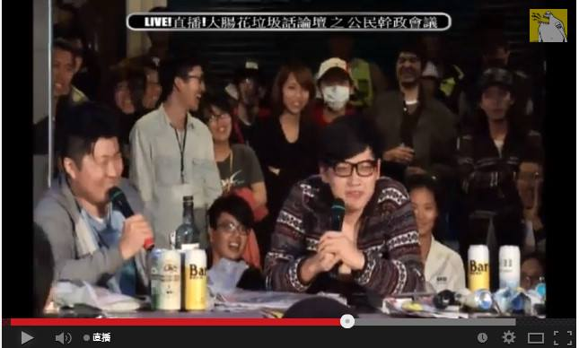
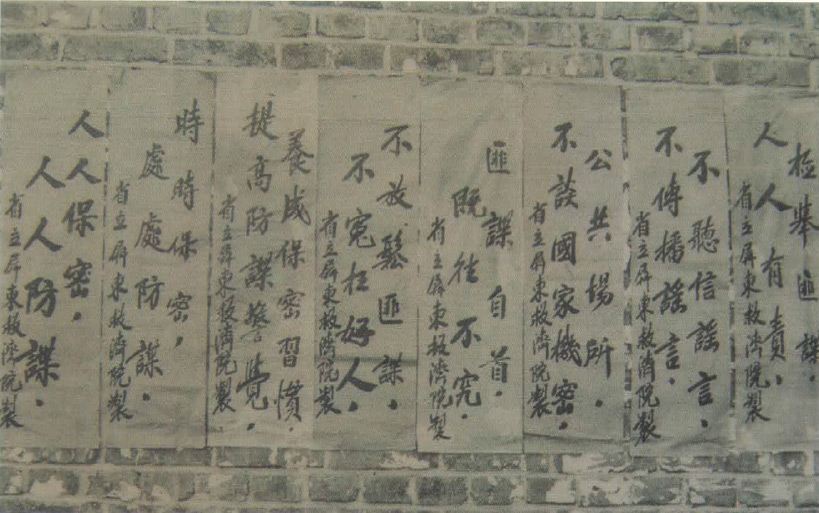
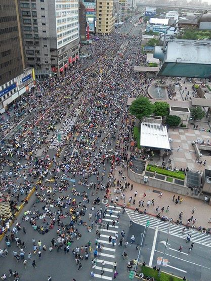
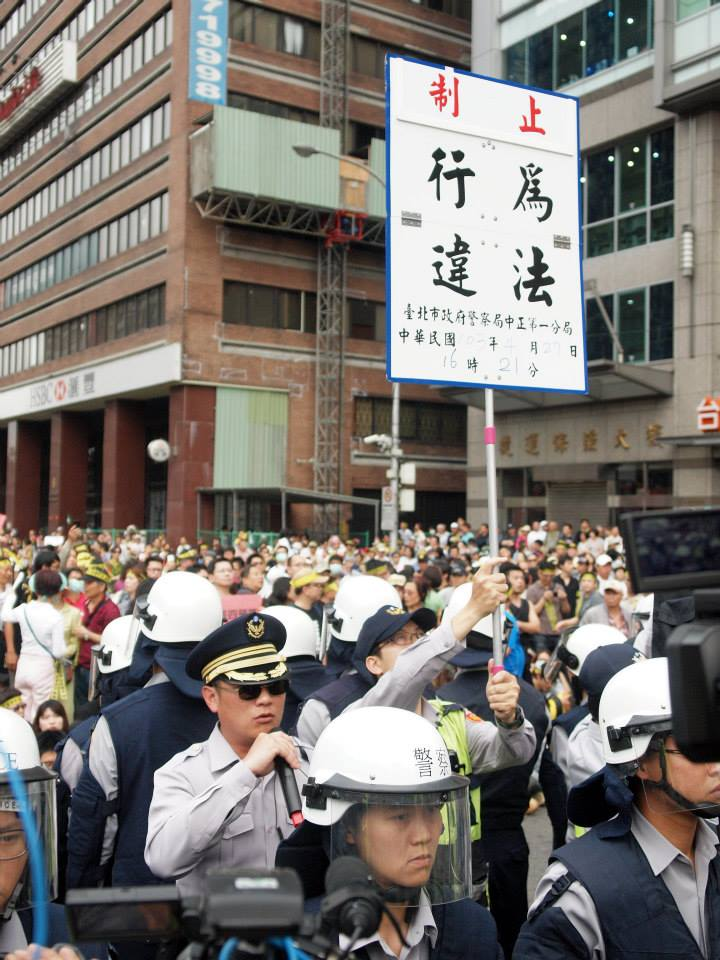

在戒嚴時代，如要針對特定組織募資捐款，可能會受到國民黨當局的監控。以1981年發生的陳文成事件為例，1979年美麗島雜誌創刊前期，人在美國的陳文成為支持美麗島雜誌，發起募款活動，並幫忙將文章翻譯成英文。1981年回台後，陳文成便遭到警備總部約談，隔日被發現陳屍於台大校園。據陳文成基金會所發表的 〈陳文成事件調察報告〉一文中，陳文成友人康寧祥提及陳文成死前曾提及，自己的一切活動都被警總監視，包含募款行動以及演講，這也是為何他被約談的原因。
憲法第11條保障「人民有言論、講學、著作及出版之自由」。言論自由被視為民主政治的一大重要指標。現在的台灣人民，擁有比大多數華人世界國家較多的言論權。不管是現實或是網路世界，人人都可以發表自己對任何事件的看法。台灣言論開放的例子包含各電視台的政論節目，以及學運的大腸花論壇，人人可以透過call-in發表自己的意見。

在戒嚴時期，當時的立法院通過了《懲治叛亂條例》以及《動員戡亂時期檢肅匪諜條例》，並透過情治機關密切掌握人民的思想及行為。因此當時，只要發表或參與當局認為涉及「叛亂」的人，就有可能被抓進看守所審問，甚至拷打。因此當時的社會可說是風聲鶴唳，鮮少人敢公開發表敏感言論。
就《憲法》第11條之保障，發行刊物亦屬於言論自由之範疇，屬於人民應享有的自由。在1999年廢除《出版法》後，發行刊物不需經政府核准、核發登記證等，且所登載之內容也不需受到政府嚴格控管，可自由發行。
由於黨禁與報禁等影響，當時的黨外人士透過創辦雜誌的方式，變相發展組織，籌畫民主行動，而《美麗島》雜誌即是當時最具代表性的黨外雜誌之一。《美麗島》雜誌創刊於1979年8月16日，網羅當時黨外精英，以黃信介為法定發行人，林義雄與姚嘉文出任發行管理人等職務。而這本雜誌創刊號即達到約10萬冊的銷量，到第四期甚至有14萬冊的高銷量，為當時銷量最高的黨外雜誌。因此，遂使執政當局無法漠視並採取行動。在1979年12月10日，《美麗島》雜誌於高雄市舉辦紀念世界人權日的大會時，執政當局早已做好準備。並在之後爆發警民衝突，引發「美麗島事件」。
台灣在解嚴後，於1992年7月14日修正更名《動員戡亂時期集會遊行法》。此法的目的是為「為保障人民集會、遊行之自由，維持社會秩序」。司法院大法官並於2014年所做出的《司法院釋字第718號解釋》，對緊急性及偶發性集會遊行應經過許可的部份，做出了違憲判定，相關法條自2015年1月1日起失效。
 
戒嚴時期，集會遊行當時都是非常敏感的。為躲避政府當局的監視，當時許多較有名的黨外人士，會藉由婚喪喜慶活動來廣發帖子。名義上是參加節慶聚會，但其實是為交流彼此想法的政治性聚會。